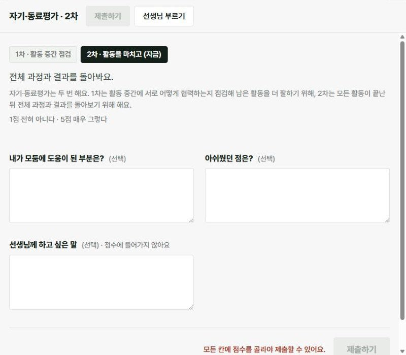
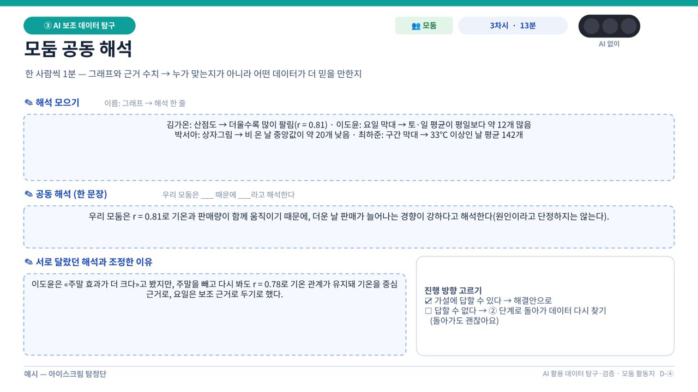
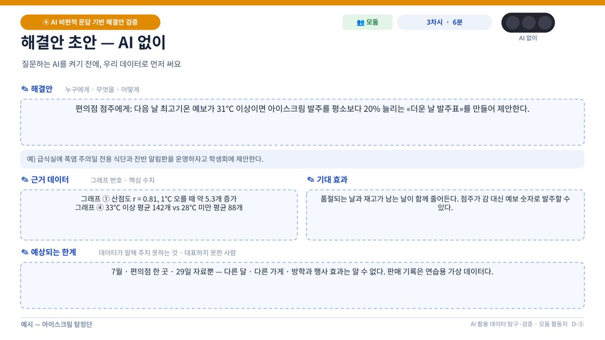
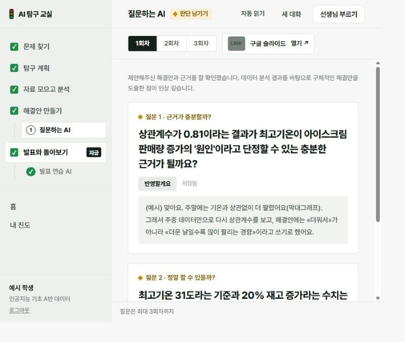
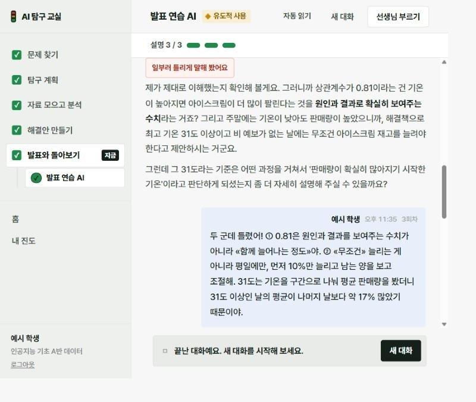
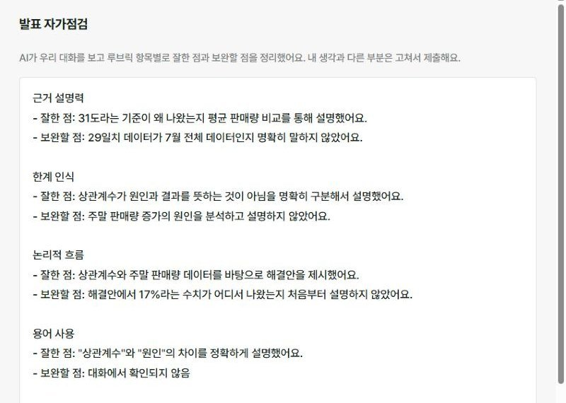
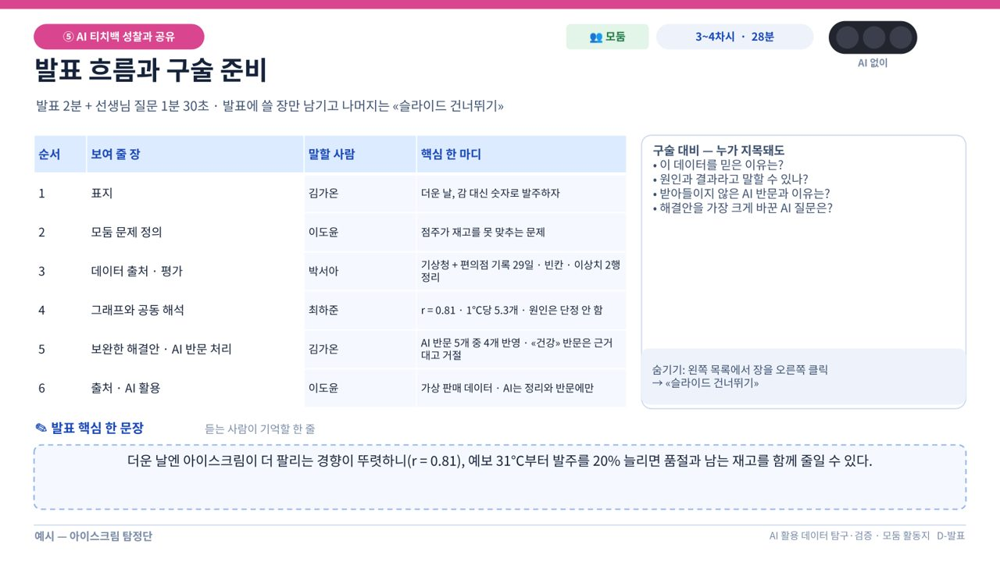
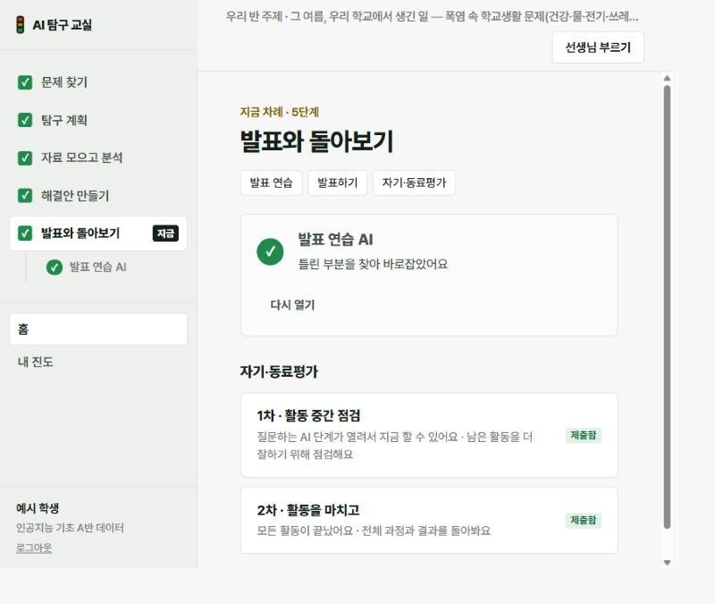

데이터 탐구 ④ — 오늘은 이 순서대로
⏱ «수업 시작»을 누르면 지금 할 단계가 노란 테두리로 보여요. 앞 20분에 활동지를 끝내고, 사후 검사 뒤에 모둠마다 1분 발표를 해요. 막히면 이 쪽을 위에서부터 다시 보세요. 끝낸 단계는 ✔를 눌러요.
우리 반 · 모둠
반과 모둠을 고르면 우리 활동지에서 고칠 쪽 번호가 나와요. 선생님 댓글(공동 해석 쪽 오른쪽)에도 같은 번호가 있어요.
수업 시계--:--«수업 시작»을 누르면 지금 할 단계에 노란 불이 들어와요
타이머01:00
발표 순서 추첨—
0 / 9 단계
1
👤 모두 각자
1차 자기 · 동료평가 내기
2–4분AI 탐구 교실 → 1차 자기 · 동료평가. 이걸 내야 질문하는 AI가 열려요. 점수만 고르면 2분이면 끝나요.

1차도 이 화면과 같은 모양이에요.
2
👥 모둠 — AI 없이
대표 그래프 1장 → 공동 해석 한 문장
4–8분- 선생님 댓글을 열어 우리 모둠 할 일을 확인해요(공동 해석 쪽 오른쪽 💬).
- 질문의 x · y가 들어 있는 그래프 하나를 대표로 정해요. 그래프가 없으면 «찾으려 한 자료 · 막힌 곳 · 찾은 숫자» 세 줄도 괜찮아요.
- «우리 모둠은 (그래프 · r · n) 때문에 ___라고 해석한다» 한 문장.

3
👥 모둠 — AI 없이
해결안 한 문장 + 근거 수치 + 한계 → PDF 받기
8–12분- 해결안: «(누구)에게 (무엇)을 (어떻게) 하자고 제안한다»
- 근거 데이터: 그래프 번호 · 핵심 수치(r, n, 평균 등)
- 예상되는 한계: 선생님 질문(Q1 · Q2)에 한 줄씩 답하기 — 발표 때 선생님이 따로 묻지 않아요

다 썼으면 질문하는 AI 담당이 파일 → 다운로드 → PDF 문서. 해결안을 쓰기 전에 받으면 해결안이 빠진 PDF가 돼요.
4
🙋 질문하는 AI 담당 1명
질문하는 AI — 반문 1개 판단하기
12–16분- AI 탐구 교실 → 질문하는 AI → PDF 올리고 해결안 붙여 넣기.
- 반문 1개에 반영할게요 / 반영 안 할게요 + 이유.
- 활동지 질문하는 AI 쪽에 «반문 → 우리 판단 → 근거» 한 줄.

함정 질문이 섞여 있어요. «r이 크니까 원인이라고 단정해도 될까요?» 같은 질문은 반영 안 할게요 + «상관이지 원인은 아니라서».
5
👤 모두 각자 (질문하는 AI 담당은 끝나고 바로)
발표 연습 AI → 자가점검 제출
12–18분- AI 탐구 교실 → 발표 연습 AI에 «우리가 알아낸 것 → 근거 수치 → 한계» 세 문장.
- AI가 틀리게 말하면 바로잡아요.
- 자가점검 만들기 → 제출. 안 내면 2차 평가가 잠겨요!
- 활동지 «AI가 되물은 것» 칸에 한 줄.


6
👤 모두 각자
2차 자기 · 동료평가 + 성찰 칸 + AI 사용 기록
18–21분- AI 탐구 교실 → 2차 자기 · 동료평가(성찰 한 줄 · AI 사용 기록 포함)
- 활동지 자기평가와 성찰: 내 이름 칸에 «AI 도움 받은 것 / 끝까지 판단한 것 / 다음엔»
- 활동지 AI 사용 기록: 오늘 쓴 AI 한 줄
2차 평가가 안 열리면 → 5단계 자가점검을 아직 안 낸 거예요.
8
👥 모둠
발표 준비 — 핵심 한 문장 · 발표할 장만 남기기
26–28분- 발표 흐름 쪽 발표 핵심 한 문장
- 남길 장: 대표 그래프 · 공동 해석 · 해결안 · 보완한 해결안 — 나머지는 왼쪽 목록에서 오른쪽 클릭 → 슬라이드 건너뛰기
- 발표는 1분: 질문 → 대표 그래프 · 수치 → 해결안 → 한계

9
👥 모둠
1분 발표 · 💰 투자 심사 · 투자 한 표
28–40분- 발표 순서대로 1분. 선생님 질문은 없어요(활동지 한계 칸에 이미 답했어요).
- 듣는 동안 💰 투자 심사에서 그 모둠을 📊 데이터 근거 · 🚀 실현 가능성 · 🤖 AI 반문 처리 1~5로 저장.
- 모든 발표가 끝나면 맨 아래 투자 한 표(우리 모둠 X).

다섯 단계에 모두 ✓ — 수고했어요!

made by ptp 🐰